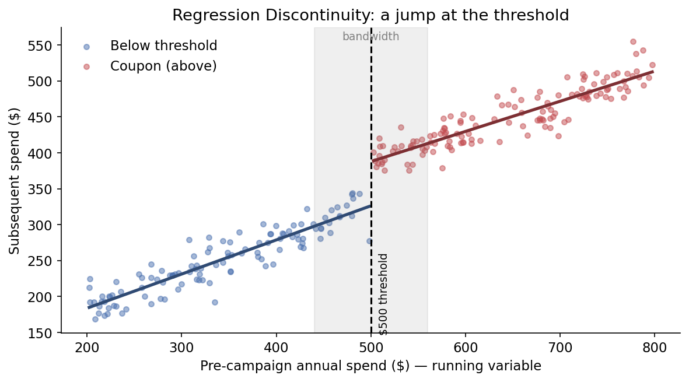

3.3 准实验
关于中文版
本页是英文版 Marketing Science in Python 的AI翻译。英文版为正式版本，如有出入，以英文版为准。代码、Notebook 和图片中的文字保持英文。 阅读英文版
A/B 测试是测量因果关系的黄金标准。随机决定谁接受处理，对照组就能告诉你没有处理时本会发生什么。但你并不总能做 A/B 测试。正如第 3.1 节所述，有很多原因会让 A/B 测试不可行。
当你无法随机化时，就要用准实验。准实验在没有随机分配的情况下估计因果关系。它利用业务流程留下的任何比较：一个阈值、一次跳过了某些单位的推广、一个上线日期。最后这一点正是关键所在。非随机的推广并不自动成为可用的准实验。它必须留下一个你能为其假设辩护的比较，而本章中的每种设计都附带着一个你必须辩护的假设。
本章介绍三种设计：断点回归设计（RDD）、双重差分（DiD）和合成控制。每一种都需要未接受处理的单位作为比较对象：一组没有安装陈列的对照门店，或者一批可以混合成一个比较对象的门店。第四种设计 CausalImpact 用于根本没有未处理单位的情况。它放在下一章。
哪种设计适合你的情况？
四种设计已经不少了，而且名字并不能告诉你需要哪一种。所以让我们把它们全都放到同一个具体问题上。一家零售商有 100 家门店。它推出了一种新的店内陈列，想知道这种陈列对品类销售额产生了什么影响。
第一个问题永远相同：陈列是随机分配的吗？如果是，未安装陈列的门店就是你的对照组，你回到了第 3.2 节。如果不是，分配的方式决定了设计。
| 谁安装了陈列 | 设计 | 比较对象 |
|---|---|---|
| 随机选出的 50 家门店 | A/B 测试 | 另外 50 家 |
| 年销售额超过 $1M 的所有门店 | RDD | 略低于 $1M 的门店与略高于 $1M 的门店，且仅限这些门店 |
| 销售团队选出的 50 家门店 | DiD | 另外 50 家，前后对比 |
| 仅纽约门店 | 合成控制 | 其余 99 家门店按过去销售额匹配的加权混合 |
| 全部 100 家，同一天 | CausalImpact（下一章） | 根据连锁自身历史和陈列无法影响的市场序列做出的预测 |
每一行都是同样的 100 家门店。变化的是陈列的分配方式，而这决定了设计和你需要的数据：RDD 需要驱动变量，DiD 需要前后对比的面板数据，合成控制需要较长的事前时期和一批未处理门店。随机选出的 50 家门店和销售团队选出的 50 家门店可以产生同样的电子表格，但只有前者是实验。这就是整章的规则。分配决定设计。数据再决定设计是否可信。
那张表是一家零售商的五个选项。图 1 把它变成了适用于任何推广的决策路由：两个是非问题，然后是一个取决于你还剩多少未处理数据的选择。

这四种设计也不是四个互不相关的技巧。其中一种，RDD，只用一个阈值，别无其他。另外三种构成一架阶梯。DiD 借用对照门店的趋势。当没有任何单个门店足以胜任时，合成控制把对照门店混合成一个更好的比较对象。当根本没有对照门店时，CausalImpact 通过预测得到比较对象。每上一级，对模型的依赖就更重一分。本章介绍 RDD 和前两级。
断点回归设计（RDD）
核心思路：在阈值附近，分配几乎等同于随机。
从 表 1 的第二行开始。销售团队没有挑选门店，而是写下了一条规则：年销售额超过 $1M 的每家门店都安装新陈列。这样一来，试点门店按构造就是最大的门店。把它们与其余门店比较，只会测出“成为大店是什么样”。
但看看靠近分界线的门店。一家做到 $1.02M 的门店和一家做到 $0.98M 的门店规模大致相同，服务相似的顾客，开展相似的促销。它们落在 $1M 的哪一边，近乎抛硬币。RDD 就把它当作抛硬币来处理。它比较略高于阈值与略低于阈值的结果，如果品类销售额在 $1M 处出现跳跃，这个跳跃就是陈列的效应。同样的逻辑也适用于客户：如果过去消费至少 $500 的客户会收到优惠券，就把消费 $502 的客户与消费 $498 的客户进行比较。
RDD 何时不适用
RDD 需要阈值附近有大量单位，因为它只用这些单位。100 家门店中，也许只有十家落在 $1M 上下百分之几的范围内，这太少了，不足以在两侧各拟合一条直线并从噪声中看出跳跃。而 $500 附近有 20,000 名客户时就不是问题。这就是为什么在营销中 RDD 主要是一个客户层面的工具：基于过去消费的优惠券或积分，销售外联的线索评分阈值。图 2 展示的就是这个版本。

还有两个限制。效应是局部的：$500 处的跳跃说明的是优惠券对消费约 $500 的客户起了什么作用，而不是对消费 $5,000 的客户。而且单位不能有办法自己跨过分界线。如果一个会员计划在 $1,000 处把客户升到下一等级，而客户知道这一点，有些人就会在十二月多买一次以跨过门槛。如果店长达到 $1M 就能拿到奖金，那么十一月还在 $0.97M 的门店会想办法以 $1.01M 收官。无论哪种情况，刚好高于阈值的单位都是那些更努力的单位，而 RDD 会把这读成处理的效应。驱动变量的直方图在阈值上方刚好堆起一堆，就是破绽所在。在这样的阈值上，RDD 不能使用。
双重差分（DiD）
核心思路：比较变化量，而不是水平值。对照组随时间的变化，代表了实验组在没有处理时本会发生的变化。
现在看 表 1 的第三行：销售团队为新陈列挑选了 50 家门店，另外 50 家可比门店保留标准的货架布局。你手里有两组门店在推广前后的每店品类销售额。
试点门店从 $42k 增长到 $48k。所以陈列每店值 $6k？
大概不是。对比门店在完全没有陈列的情况下从 $40k 增长到 $43k。有某种因素把整个品类抬高了大约 $3k：季节性、客流、竞争对手缺货。只看试点门店的前后比较，会把这部分市场增长记作陈列效应。
那就改为比较推广后的两组。$48k 对 $43k，差 $5k。这是效应吗？
也不是。在任何事情发生之前，试点门店就已经领先 $2k，即 $42k 对 $40k。销售团队不是随机挑选的，而推广后时期的实验组对对照组比较会把这段领先记作陈列效应。
每一种朴素比较都败在不同的混杂上。前后比较中了共同的时间趋势。实验组对对照组比较中了两组之间原本存在的差距。取这两个差分的差，二者都会抵消：
| 门店组 | 之前 | 之后 | 变化 |
|---|---|---|---|
| 试点门店 | $42k | $48k | +$6k |
| 对比门店 | $40k | $43k | +$3k |
| DiD 估计 | +$3k |
试点门店增长了 $6k，对比门店增长了 $3k，差值是 $3k。反过来算也得到同样的答案：之后 $5k 的差距减去之前 $2k 的差距。这就是双重差分。共同趋势被抵消了。两组之间任何固定的差异也被抵消了。剩下的，是试点门店的变化中对比门店无法解释的那部分。
在代码中，这个估计就是那两个差分：
import pandas as pd
did = pd.DataFrame({
"group": ["Pilot stores", "Comparison stores"],
"before": [42, 40], # category sales per store, $k
"after": [48, 43],
})
did["change"] = did["after"] - did["before"] # +6 and +3
did_estimate = did.loc[0, "change"] - did.loc[1, "change"]
print(f"DiD estimate: ${did_estimate}k") # DiD estimate: $3kDiD 适合营销中大多数“有些单位变了，其他没变”的情形：店内陈列试点、货架重置、按区域推广的促销、在选定市场的价格调整、先在一个平台上线的 App 功能。
平行趋势假设
DiD 建立在平行趋势（也称共同趋势）之上：如果没有处理，两组本会沿着相同的趋势发展。是趋势，不是水平。两组可以从不同的销售水平出发，就像试点门店那样。重要的是，对比组在推广后的变化能公平地代表试点门店靠自己本会发生的变化。
你永远无法完全验证这一点，因为你观察不到没有陈列的试点门店。但你可以检查推广之前的时期。

把两组随时间的走势画出来，看陈列之前的那一段。如果两条线同步移动，DiD 就是可信的。干净的事前趋势是一项可信度检查，而不是证明，但这是每个人都会要求看的检查。
DiD 何时不适用
当销售团队按增长势头挑选时，DiD 就会失效。如果他们选的是本来就增长更快的门店，两组就不共享同一趋势，DiD 估计会把本来就要到来的增长归功于陈列。你会在事前时期的图上看到这一点：在陈列之前两条线就已经在分化。遇到这种情况，不要硬套 DiD。更仔细地匹配两组，给对比门店加权，或者转向合成控制。
用回归估计 DiD
这张二乘二的表格表达的是思路。它不是你要汇报的东西，原因有二。它不给出标准误，所以你无法说 +$3k 是否与零可区分。而且真实数据不是两个时期，而是 100 家门店 24 个月的销售额。回归版本同时处理这两点。每家门店每个月一行，每家门店一个固定效应，每个月一个固定效应，再加上一个处理门店在推广后时期的交互项。门店效应吸收了门店之间所有固定的差异。月份效应吸收了当月冲击所有门店的每一个趋势和冲击。交互项就是 DiD 估计。
import statsmodels.formula.api as smf
# df: one row per store-month (store_id, period, treated, post, category_sales)
model = smf.ols(
"category_sales ~ C(store_id) + C(period) + treated:post",
data=df,
).fit(cov_type="cluster", cov_kwds={"groups": df["store_id"]})
coef, se = model.params["treated:post"], model.bse["treated:post"]
print(f"DiD estimate: {coef:.2f} (SE {se:.2f})") # DiD estimate: 3.02 (SE 0.04)按门店对标准误做聚类，处理了每家门店的重复测量。同一个回归也可以检查事前趋势：把 treated:post 替换为每个月一个 treated × 月份项，并确认推广前的各项接近于零。配套 Notebook 会带你走完完整的面板数据和这项检查。
合成控制
核心思路：当没有任何单个对照单位匹配时，用多个单位混合出一个来。
DiD 之所以奏效，是因为 50 家对照门店给了你一条令人信服、可以借用的趋势。现在看 表 1 的第四行：只有纽约门店安装了陈列。其余 99 家门店中哪一家是合适的比较对象？它们在规模、品类构成和本地竞争上各不相同，没有任何一家门店能令人信服地替代纽约。
合成控制不挑选某一家。它把其余 99 家门店当作一个捐赠池（donor pool），并用它们的加权混合构造出一个“合成纽约”，权重的选择使得这个混合在陈列安装之前尽可能贴近纽约的销售额。在配套 Notebook 中，混合的结果是波士顿门店占 36%，费城占 28%，芝加哥占 22%，另有百分之几分散在其他四家门店上。陈列安装之后，真实纽约与其合成孪生体之间的差距就是估计的效应。

每当一个单位接受处理而许多相似单位没有时，它就是自然的设计：一家门店翻新，一个都会区投放户外广告，一个 SKU 调价并以其同类 SKU 作为捐赠者。这些地理层面的设计会在第 6.3 节作为地理实验的稳健性检查再次出现，并在第 6.4 节作为媒体组合模型的校准锚点再次出现。
合成控制何时不适用
可信度检查看的是事前时期的拟合。如果 99 家门店的任何混合都无法重现纽约在陈列之前的历史，就不要相信之后的差距。捐赠者也必须未受影响：纽约的陈列不会改变芝加哥的销售额，但纽约的电视广告可能会触达新泽西，一个沾上了处理的捐赠者会把合成孪生体拖向处理路径。而且它做不了单个客户。单个客户的每周消费大多是零和噪声，其他客户的任何混合都无法追踪它。客户层面的问题需要许多客户，那是 DiD 或 RDD 的领域。
当没有对照组时
DiD 从对照门店借用趋势。当没有单个门店合适时，合成控制把对照门店混合起来。RDD 把刚好低于分界线的门店与刚好高于分界线的门店进行比较。三者都从行动未触及的单位那里借来比较对象，当行动触及了所有人时，它们都无能为力：
- 新陈列在同一天进入了全部 100 家门店。
- 营销活动在每个区域都投放了，而不是只在少数几个。
- 优惠券发给了每一位客户。
没有未处理的门店、区域或客户可供比较。所以比较对象必须靠预测得到：依据该序列在行动之前的走势，以及行动无法触及的其他序列在行动之后的走势。这是阶梯的最后一级，CausalImpact，它就在下一章。
配套 Notebook： sec3.3_quasi_experiments.ipynb 用 statsmodels 和 scipy 在合成数据上完整演示了 RDD、DiD（表格、回归和事前趋势检查）以及合成控制。
在 GitHub 上查看
要点
- 分配决定设计。随机化，你就有了 A/B 测试；阈值给出 RDD；其他情况则沿着从 DiD 到合成控制再到 CausalImpact 的阶梯向上走，每上一级对模型的依赖就更重。
- 准实验的可信度只取决于其识别假设的可信度。事前趋势图或事前时期拟合可以暴露薄弱的设计，但通过检查只是一项可信度检查，而不是证明。